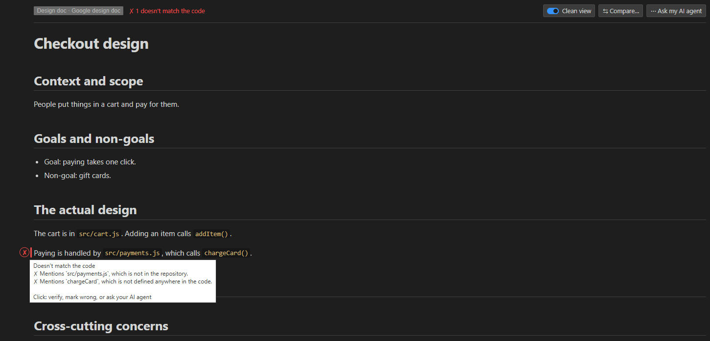
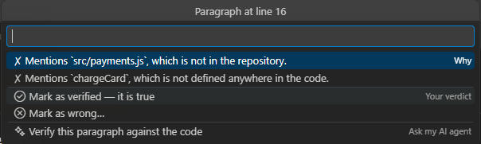
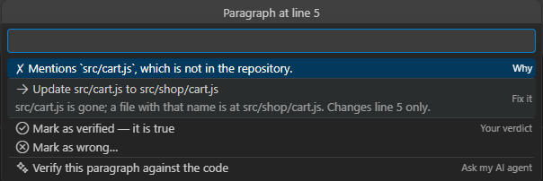
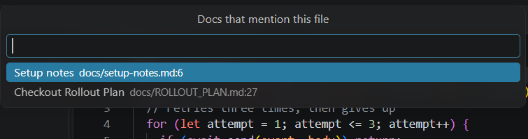
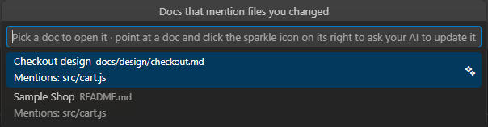
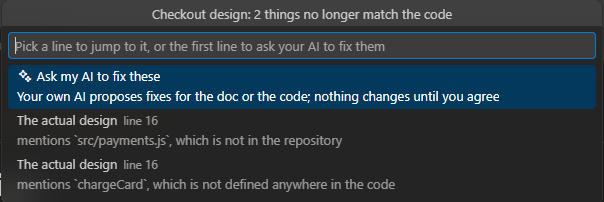
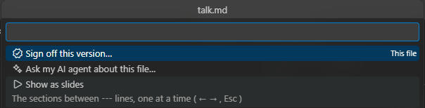
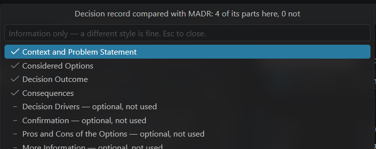

Trusting your docs
Docs go out of date quietly. See which paragraphs no longer match the code, what changed, and who approved which version.
- Trust markers
- Mark as verified
- File moved
- Mentioned in code
- Docs that mention a file
- Before you commit
- Code vs design
- What changed
- Sign off
- Kind of doc
- Standard format
-
Trust markers
“I followed the setup doc. The file it names doesn't exist.”
A red ✗ in the margin marks paragraphs that name files or commands not in your code. Other marks: ⇄ another doc disagrees, ⚠ may be out of date. Far fewer false alarms: shortened paths, build output, library names, npm's own commands and years are no longer marked.
Where: the left margin of the page, and a count at the top, e.g. ✗ 1 doesn't match the code.

-
Mark a paragraph as verified
“I checked this paragraph. I want others to know it's right.”
Click a mark → Mark as verified. It turns into ✓, and the warning comes back if the code changes later.
Where: click a mark in the margin. For a paragraph without one, hover it and click the faint dot.

-
A file moved? One click fixes the doc
“We moved
cart.jsinto a folder. Now every doc points to the old place.”When the file still exists under a new path, the ✗ menu offers Update old to new. One click changes that name on that one line, nothing else.
Where: click the red ✗ next to the paragraph → Update … to …

-
Docs mentioned in code
“I'm changing this code. Which docs talk about it?”
A small line at the top of the code file: 📄 Mentioned in 2 docs.
Where: the top of any code file that a doc names.

-
Docs That Mention This File
“Show me every doc that names this file.”
A list of each doc and the line that names your file. Pick one to jump straight there.
Where: click 📄 Mentioned in N docs, or Command Palette → Docs That Mention This File.

-
Docs to update before you commit
“I changed the code. Now the docs are quietly wrong.”
A note at the bottom of VS Code: 📖 2 docs mention files you changed. Click it to open those docs, or point at one and click the sparkle icon on its right to have your AI agent update it. Never a pop-up.
Where: the status bar (the thin bar at the very bottom), after you save a change. It goes away once you commit.

-
Does the code still match this doc?
“The design says one thing, the code does another, and nobody noticed.”
One list of everything the doc names that the code no longer has: files, functions, commands, settings, versions. Its first line, Ask my AI to fix these, asks your AI agent which side is wrong.
Where: right-click in the doc's text → Does the Code Still Match This Doc?

-
Compare: what changed
“Someone changed the plan. What exactly is different?”
New words underlined in green, removed words crossed out in red, right on the page. Compare with the version you last read, the last commit, a week ago…
Where: the ⇆ Compare… button at the top of the page.

-
Sign off a version
“Which version did the lead actually approve?”
Writes ✓ Signed off by your name and the date into the file, and shows ⚠ Changed since… when someone edits it later.
Where: ⋯ Ask my AI agent at the top of the page → Sign off this version…

-
What kind of doc is this?
“Is this a decision, a design or a plan? Does it follow a known format?”
When docmap is sure, a small label says so, e.g. Decision record · MADR. A doc in another style is never marked wrong.
Where: the top left of the page.

-
Compare with a Standard Format
“Did I forget a section?”
Lists which parts of the format your doc has: ✓ has it, ○ expected, – optional. Your team's own format comes first. Your file is never changed.
Where: click the doc-kind label, or What Can docmap Do? → Compare with a Standard Format…

Want step-by-step examples to try? In VS Code press Ctrl+Shift+P and run Help (All Features).